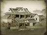

Enables
- Buildings: 
- Arts:

Effects
- -10% to the cost of constructing farms across all provinces
Description
Wisdom grows on trees:
Land tells the farmer what to grow.
Harvest proves it right.
While a lord may own a garden he need not sow, weed and hoe it for himself. He lets his gardener work in harmony with the soil, and enjoys the blossoms and rich fruits that result. Sometimes, the greater wisdom is to recognise the wisdom of others, and let them do their work without direction. The gardener will find the path to the perfect garden; the lord will find the path to greatness.